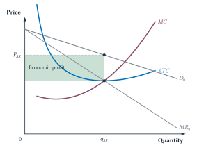
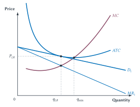

Chapter 16
Monopolistic Competition, Product Differentiation, and Advertising
Many firms compete by offering products that are similar but not identical, while entry limits long-run economic profit.

Walk down a busy street and count the restaurants. There may be many sellers, but their meals are not identical. One offers pizza, another tacos, another Thai food, and another burgers. Even two pizza shops can differ in location, menu, atmosphere, service, hours, and reputation.
Each restaurant therefore has some control over its own price. If one raises its price slightly, it will not lose every customer. Some people prefer its food or location. But it cannot ignore its rivals. A large price increase sends customers toward other restaurants, grocery stores, food trucks, or meals at home. If restaurants in the area earn unusually high economic profit, new ones can open.
This is monopolistic competition: many sellers compete, their products are differentiated, and entry is relatively open.
The name sounds contradictory. The “monopolistic” part means that each firm sells a product that is not identical to every alternative, so the firm faces a downward-sloping demand curve. The “competition” part means that buyers have substitutes and new firms can enter. Each seller has limited market power, but no seller is protected from competition in the way a true monopoly is.
The model describes many restaurants, coffee shops, salons, gyms, clothing brands, and local services. Yet the chapter will also place the model in perspective. Products can differ without those differences giving firms much power over price. When buyers can switch easily among many close substitutes, perfect competition may remain a useful approximation.
The more interesting questions begin once products differ. What does competition look like when firms choose quality, location, service, and reputation as well as price? Is unused production capacity necessarily wasteful, or is it part of the cost of variety? Does advertising merely persuade people to buy, or can it help buyers find lower prices and give sellers a reason to protect quality?
Quick Concept
Monopolistic Competition
Monopolistic competition combines many competing sellers, differentiated products, and relatively open entry.
Many Sellers, Different Products
A product is differentiated when buyers view it as different from competing products. The difference can come from the product itself or from the way it is sold.
- Features or design: Two phones may use different operating systems, cameras, or interfaces.
- Quality: Two restaurants may use different ingredients or provide different levels of service.
- Location: A nearby coffee shop may be more convenient than one several miles away.
- Hours: A gym open all night offers something different from one that closes at 8 p.m.
- Reputation: Buyers may trust a seller they have used before.
- Buyer perception: Packaging, advertising, and brand image can affect how buyers view alternatives.
These differences make the products imperfect substitutes. A price increase causes some buyers to switch, but not all of them.
Quick Concept
Product Differentiation
Products are differentiated when buyers view them as imperfect substitutes because of features, quality, location, service, reputation, or perceived differences.
How Much Does The Difference Matter?
Nearly every firm sells something that differs slightly from what another firm sells. That does not mean every firm has important market power.
Suppose two gas stations across the street sell the same grades of gasoline. Their entrances, loyalty programs, and convenience stores differ, so the products are not literally identical. Yet drivers can see both posted prices and switch with little trouble. A large price difference may be impossible to maintain.
A neighborhood restaurant is different. Some customers may strongly prefer its food, atmosphere, or location. The restaurant can raise its price without losing everyone, although it will lose some customers.
The useful question is not whether products differ at all. The useful question is whether the differences matter enough to change how price, entry, search, quality, or advertising work.
When buyers have many close substitutes and switch readily, the demand facing one firm can be highly elastic. Its demand curve slopes downward, but only slightly. In that setting, the competitive model may give a good answer without adding much complexity. Use monopolistic competition when the differences themselves help explain what happens.
Common Mistake
Downward-Sloping Demand Does Not Mean Large Market Power
A differentiated firm’s demand curve slopes downward, but it may still be highly elastic when buyers have many close substitutes. The curve shows some control over price. It does not show that the firm’s power, markup, or effect on welfare is large.
This is also why a differentiated firm is not automatically a monopoly. A restaurant may be the only seller of its exact meals in its exact building. What matters is whether buyers have close substitutes and whether new rivals can enter.
If every seller of a unique product were called a monopolist, every restaurant and corner store would be a monopoly, and the word would tell us almost nothing.
The Firm In The Short Run
The short-run decision should look familiar. Chapter 15 explained how a firm with a downward-sloping demand curve chooses output and price.
The firm cannot choose price and quantity independently. Every point on its demand curve is a possible combination: a higher price with fewer sales or a lower price with more sales. To sell another unit, the firm must lower price. Because that lower price also applies to earlier units, marginal revenue is below price.
The firm follows the same two steps as a monopolist:
- Choose the quantity at which marginal revenue equals marginal cost.
- Move up to the demand curve to find the price buyers will pay for that quantity.
The difference is one of degree. A monopolistically competitive firm normally faces many close substitutes and relatively easy entry. Its demand may therefore be much more elastic, and its pricing power much smaller, than the demand facing the monopolist in Chapter 15.
Figure 16.1. A differentiated firm can earn economic
profit in the short run. The firm chooses \(q_{SR}\) where MR
meets MC, then reads price \(P_{SR}\) from demand. At that
quantity, price is above ATC, so the shaded
rectangle is economic profit. Close substitutes may make this
firm’s demand much more elastic than a monopolist’s demand even
though the decision follows the same steps.
Figure 16.1 shows positive economic profit, not a permanent promise. It is a short-run situation. A popular restaurant concept, a new fitness program, or an appealing product design may attract more demand than existing firms expected. With open entry, economic profit is an invitation to rivals: customers want more of something than existing firms are providing.
Entry Pushes Economic Profit Toward Zero
Economic profit attracts imitation and entry. A successful taco restaurant may inspire another restaurant with a similar menu. A profitable gym may face a new gym nearby. A popular product feature may appear in competing brands.
Entry gives buyers more substitutes. Some customers leave existing firms for the new alternatives. The demand facing each existing firm shifts inward. With more close substitutes, customers may also become more responsive to price, making firm demand flatter.
Entry continues as long as firms expect positive economic profit. It stops when a new firm no longer expects revenue above all costs, including the opportunity cost of the owner’s time and financial capital.
Economic loss works in reverse. Some firms exit. The remaining firms gain customers, and their demand rises until the pressure from losses is removed.
Key Point
Entry Disciplines Profit
Differentiation gives each firm some market power, but profitable opportunities attract entry and close substitutes. Entry reduces the demand facing existing firms and pushes long-run economic profit toward zero.
Notice what entry removes and what it does not remove. Entry removes economic profit in the long-run model. It does not make every product identical, turn each firm into a price taker, or force price all the way down to marginal cost.
Long-Run Equilibrium
In long-run equilibrium, the firm’s demand curve is tangent to its average total cost curve. At the chosen quantity, price equals average total cost. Total revenue therefore equals total cost, and economic profit is zero.
Zero economic profit does not mean that the owner receives nothing. Total cost includes the normal return needed to keep the owner’s time and financial capital in this business. It means the firm is not earning more than those resources could earn in their next-best use.
The firm still chooses output where marginal revenue equals marginal cost and reads price from demand. Because demand slopes downward, price remains above marginal cost.

Figure 16.2. Long-run entry removes economic profit,
not the markup. At \(q_{LR}\), demand is tangent to
ATC, so price equals average total cost and
economic profit is zero. The firm chooses this quantity where
MR meets MC. Price remains above
marginal cost, and \(q_{LR}\)
lies below \(q_{min}\), the
quantity that minimizes average total cost.
The graph supports several conclusions, but it cannot answer every welfare question by itself.
| The Graph Shows | The Graph Does Not Show |
|---|---|
| Firm demand slopes downward | That the firm has a great deal of market power |
| Entry has pushed economic profit to zero | That the number of firms is ideal |
| Price is above marginal cost | That the loss from lower output is larger than the value of variety |
Output is below the minimum-ATC quantity |
That buyers would prefer fewer, more standardized products |
| Some economies of scale remain unused | That forced consolidation or standardization would make people better off |
Table 16.1. Read the long-run graph carefully. The diagram shows the conditions facing one firm. It does not measure how much buyers value product variety or construct a better market arrangement.
Markup, Excess Capacity, And Variety
Figure 16.2 has two familiar textbook results.
First, price exceeds marginal cost. At the firm’s chosen output, buyers’ willingness to pay for another unit is greater than the cost of producing it. In the standard diagram, that is the same underproduction logic used to describe deadweight loss: the firm produces less of its own variety than it would under marginal-cost pricing.
Second, the firm produces below the quantity that minimizes average total cost. Economists call this excess capacity. The firm could produce more before reaching the bottom of its average total cost curve.
Those results are correct. The interpretation requires care.
Imagine a city with many restaurants. Each one has a kitchen, lease, menu, staff, and reputation. A city with fewer enormous standardized restaurants might use each kitchen more fully and lower average production cost. But buyers would lose cuisines, locations, service styles, hours, atmospheres, and opportunities to try something new.
Would consumers really be better off if every meal came from a few enormous standardized kitchens?
The duplicated fixed costs buy something: variety and convenience.
Calling every empty table or unrealized economy of scale waste would count the cost of variety while ignoring its benefit. The long-run graph does not include a curve measuring how much consumers value having Thai food near work, pizza near home, and a diner open late.
This does not prove that the actual number of restaurants is best. A new entrant creates a new option that some buyers value. But it also takes customers from existing firms and duplicates fixed costs. Economists sometimes call this second effect business stealing. Because both forces matter, free entry can produce too many or too few firms or varieties. Zero economic profit does not prove that the number is ideal.1
The careful conclusion is narrower: excess capacity alone does not prove that government could improve the result. A real alternative would need to reduce duplicated cost or the markup while accounting for the variety, location, and service that buyers might lose.
Common Mistake
Excess Capacity Is Not A Complete Welfare Verdict
Producing each variety at a smaller scale can raise average cost, but variety, location, convenience, and service may be valuable. The graph shows a trade-off. It does not show that consumers would prefer a standardized market with fewer firms.
This is a useful application of a broader rule: compare real arrangements with realistic alternatives. Marginal-cost pricing would not automatically cover each firm’s fixed costs. Forced standardization might lower production cost while destroying valued differences. A government agency would also need information about which products, locations, and features buyers wanted to keep.2
Absent deception, collusion, or barriers that block entry, a modest markup in a differentiated market is not by itself a reason for regulation. It may simply be part of the way firms cover fixed costs while offering products that buyers view as different.
Key Point
A Markup Is Not Economic Profit
In long-run monopolistic competition, price can exceed marginal cost even while economic profit is zero. The markup helps cover fixed costs. It does not by itself prove monopoly profit or establish that intervention would improve the market.
Advertising: Two Competing Views
A professor once suggested a simple experiment: visit your grandparents’ house and look through their old magazines. You will find polished advertisements for famous products and companies that no longer exist.
That observation should make us cautious about the claim that advertising can simply make consumers buy anything forever. Advertising can matter, but it cannot permanently rescue a product that disappoints buyers or loses to better alternatives.
Economists have long offered two competing views of what advertising does.
Advertising Can Create Market Power
The first view is skeptical. Advertising may create artificial differences among products, build brand loyalty, and persuade buyers that close substitutes are not really substitutes. Buyers then become less responsive to price. In the language of Chapter 5, the demand facing the firm becomes less elastic.
Under this view, advertising can help a firm charge a higher price. Rival firms may also need large advertising budgets before buyers take them seriously, making entry harder. Some of the resources spent on advertising may therefore be used to protect market power rather than improve the product.
Advertising Can Make Markets More Competitive
The second view starts with a different problem: buyers do not automatically know every seller, price, location, or product feature. Finding and comparing alternatives takes time and effort.3
Advertising can lower that cost. A price advertisement makes comparison easier. A new seller can tell buyers that it exists. A restaurant can show its location, hours, and menu. When buyers learn about more alternatives, they can switch more easily and become more responsive to price. Firm demand becomes more elastic, not less.
The two views make opposite predictions. One says advertising builds loyalty and weakens competition. The other says advertising spreads information and strengthens competition. Neither should be accepted automatically. The question is which force matters more in the market being studied.
The old-magazine test also fits both stories. Advertising can make a brand valuable for a time, but competition, changing tastes, poor decisions, and better products can still destroy that value.
Key Point
Advertising Can Push Elasticity In Either Direction
Advertising can make buyers less responsive to price by strengthening brand loyalty, or more responsive to price by helping them find and compare alternatives. Evidence must tell us which effect is stronger.
When Advertising Lowered Prices
Lee Benham’s classic study of eyeglasses gives us a useful test of these competing views. It does not settle the advertising debate, but it challenges the idea that advertising should be assumed to weaken competition.
At the time, states differed in how strongly they restricted advertising by sellers of eyeglasses. Benham compared eyeglass purchases made in 1963. Mean prices were lower in states that permitted advertising.4
| 1963 Eyeglass Purchases | Mean Price | Sample Size |
|---|---|---|
| States permitting advertising | $26.34 | 127 |
| States completely prohibiting advertising | $33.04 | 50 |
| Difference in means | $6.70 |
Table 16.2. Eyeglasses cost less where advertising was permitted. Benham also estimated that complete advertising restrictions were associated with about a $7.48 higher price after accounting for several buyer differences.
Why might advertising lower price? It can help buyers locate low-price sellers. It can also let a low-price firm attract enough customers to operate at a larger scale. Without advertising, buyers may never discover the alternative, and a high-volume seller may not reach enough customers to survive.
The study does not prove that every advertisement lowers price. It compared states rather than randomly assigning their laws. The purchases came from 1963, the samples were modest, and states may have differed in quality, service, entry rules, and other ways that were difficult to measure.
The proper conclusion is not that the information view always wins. It is that the standard skeptical story cannot simply be treated as the default. In this market, the evidence is consistent with advertising making comparison easier and competition stronger.
The case also connects back to Chapter 8. A restriction defended as consumer protection can make price comparison harder and protect established sellers from low-price entry. That possibility should be investigated rather than ignored.
Brands Give Firms Something To Lose
Advertising and brands can also matter when quality is hard to judge before buying. A meal’s taste, a hotel’s service, or a product’s durability may not be clear until after purchase. Economists call these experience goods.
A brand lets buyers identify the seller again. If quality disappoints them, they can stop buying and warn others. The seller then loses repeat customers and may also lose the value of the money spent building its name.
A brand can reassure buyers precisely because the seller can lose it.
In that simple sense, a brand can act like a performance bond: something valuable the seller puts at risk by disappointing buyers.5 The seller behaves better today because poor quality can destroy future business.
The idea does not require the claim that expensive advertising proves high quality. A costly campaign can be wasted, and a bad product can still be advertised heavily. The useful question is simpler: what does this seller stand to lose if buyers are disappointed?
Quick Concept
Performance Bond
A performance bond is something valuable a seller stands to lose by disappointing buyers. Brand reputation and future repeat business can help discipline quality.
When Certification Can Replace Part Of A Brand
A brand is only one way to reduce uncertainty. Testing, warranties, reviews, and certification can provide some of the same assurance.
Compare brand-name ibuprofen with an FDA-approved generic. FDA requires the generic to match the brand-name drug in its active ingredient, strength, dosage form, route of administration, quality, and bioequivalence. Appearance and some inactive ingredients can differ.6 That outside review supplies much of the information buyers might otherwise expect from a familiar brand.
The comparison can change when outside assurance is weaker. FDA regulates dietary supplements, for example, but does not approve them for safety and effectiveness before sale. Products with the same main ingredient can also differ in formulation, texture, consistency, processing, or packaging.7 In such a market, past experience with a brand may carry more information.
The general point is simple: the less buyers can learn from testing or certification, the more valuable a trusted brand may become. This is an example about information, not medical advice or a claim that a particular product is better.
Did The Advertisement Cause The Sale?
A click followed by a purchase does not prove that an advertisement caused the sale. A customer who already planned to buy may search for the brand, click its advertisement, and then make the same purchase that would have happened anyway.
Large randomized experiments at eBay asked the right question: did showing the paid-search advertisement create added sales? Brand-keyword ads produced no measurable short-run benefit in that setting. Non-brand ads helped new and infrequent users more than frequent users, who already knew eBay.8
This does not prove that paid search never works. It shows why firms should measure sales caused by advertising rather than clicks or purchases that merely followed an advertisement. Together, Benham and eBay suggest that advertising is most useful when it gives buyers information they did not already have.
Edward Chamberlin And Competition Among Different Products
Edward Chamberlin’s 1933 book The Theory of Monopolistic Competition challenged the idea that markets must be either perfectly competitive or monopolized. Many firms can compete vigorously while each sells something different enough to face its own downward-sloping demand curve.
That insight helps organize this chapter, but it should not become another rigid category. The importance of differentiation varies across markets. Sometimes a difference in location, quality, or reputation drives the result. Sometimes products are so close and entry so easy that the competitive model remains a better simple tool.
The test is practical: choose the simplest model that preserves the force you need to understand.
The Big Picture
Monopolistic competition describes a common middle ground. Many firms sell products that are similar but not identical. Differentiation gives each firm limited control over price. Close substitutes and entry restrict that control and push long-run economic profit toward zero.
The standard firm model still matters. In the short run, the firm chooses output where marginal revenue equals marginal cost and reads price from demand. If price exceeds average total cost, the firm earns economic profit. Entry then reduces the demand facing existing firms until price equals average total cost and economic profit is zero.
In long-run equilibrium, price remains above marginal cost and each firm operates below the output that minimizes average total cost. These facts show a cost of differentiation: within each variety, output is lower and some economies of scale remain unused.
But the costs cannot be evaluated alone. Separate restaurants, stores, brands, and service providers duplicate fixed costs because they offer different locations, products, hours, styles, and reputations. Consumers may value those differences. The real trade-off is not between imperfect variety and a free perfect alternative. It is between variety and the resources needed to provide it.
Advertising raises the same need for careful reasoning. It can reduce search costs, communicate price and features, help entrants become known, support a reputation, or give a firm something to lose if quality falls. It can also persuade, strengthen perceived differences, or make entry harder. Evidence determines which force matters in a particular market.
Brands and advertising therefore are not signs that competition has stopped. They are often among the ways firms compete when products differ and information is incomplete.
Study And Learn
Chapter Study Map
Core Ideas
- Monopolistic competition combines many sellers, differentiated products, and relatively open entry.
- Product differentiation gives a firm a downward-sloping demand curve and limited market power.
- When buyers have many close substitutes, perfect competition may still be a useful approximation.
- A monopolistically competitive firm uses the same short-run output-and-price sequence as a monopolist.
- Entry pushes long-run economic profit toward zero but does not eliminate the markup.
- In long-run equilibrium, price exceeds marginal cost and
output is below the minimum-
ATCquantity. - Excess capacity shows a cost of variety, not a complete welfare verdict.
- Advertising can build brand loyalty and reduce elasticity, or spread information and increase elasticity.
- Brands and future repeat sales can give a seller something valuable to lose if quality falls.
- Certification can replace part of the information supplied by a brand.
- Purchases after an advertisement are not necessarily purchases caused by the advertisement.
Figures And Tables
- Figure 16.1: choose short-run output where
MRmeetsMC, read price from demand, and identify economic profit. - Figure 16.2: identify zero economic profit, price above marginal cost, and excess capacity in long-run equilibrium.
- Table 16.1: separate what the long-run graph shows from what it cannot prove.
- Table 16.2: interpret Benham’s eyeglass-price evidence and its limits.
Reasoning Tasks
- Decide whether product differences matter enough to use monopolistic competition rather than perfect competition.
- Explain why firm demand slopes downward without calling every differentiated firm a monopoly.
- Narrate how short-run economic profit attracts entry and changes incumbent demand.
- Distinguish a markup from economic profit.
- Compare unused economies of scale with the value of variety, location, and service.
- Compare the market-power and information views of advertising.
- Explain what future return a seller risks losing after disappointing buyers.
- Ask what buyers would have done without an advertisement before claiming that it caused sales.
Common Mistakes
- Treating every product difference as important market power.
- Calling the only seller of an exact brand a monopoly.
- Letting demand rather than marginal revenue determine the firm’s chosen output.
- Claiming that entry pushes price to marginal cost in monopolistic competition.
- Treating a markup as proof of positive economic profit.
- Treating excess capacity as proof that buyers want fewer products.
- Assuming that all advertising informs or that all advertising wastes resources.
- Treating expensive advertising as automatic proof of quality.
- Assuming that every sale following an advertisement was caused by it.
Looking Ahead
Chapter 17 studies oligopoly, where a few important firms must anticipate how rivals will respond. Strategic interaction and barriers to entry become more important than in monopolistic competition.
Review Questions
- What three conditions define monopolistic competition?
- What is product differentiation?
- Name five ways products can be differentiated.
- Why does a differentiated firm face a downward-sloping demand curve?
- Why does downward-sloping firm demand not prove that the firm has large market power?
- When might perfect competition remain a useful approximation for differentiated products?
- Why is marginal revenue below price for a monopolistically competitive firm?
- Describe the two steps used to choose the firm’s short-run output and price.
- How can a monopolistically competitive firm earn economic profit in the short run?
- How does entry affect the demand facing an existing firm?
- What condition produces zero economic profit in the long-run diagram?
- Why can price remain above marginal cost when economic profit is zero?
- What is excess capacity?
- What does
P > MCmean in the standard long-run model? - Why does excess capacity not prove that consumers would prefer fewer standardized firms?
- Why can free entry produce either too many or too few varieties?
- What is a search cost?
- How can advertising make firm demand less elastic? How can it make firm demand more elastic?
- What is an experience good?
- How can a brand act as a performance bond?
- How can certification reduce the informational value of a brand?
- What did Benham’s eyeglass study find, and why should the result be interpreted cautiously?
- Why can clicks and purchases overstate an advertisement’s effect on sales?
Economic Reasoning Questions
- Two gas stations across the street sell the same grades of gasoline but have different convenience stores. Would perfect competition or monopolistic competition be the more useful model for gasoline prices? What additional facts would help you decide?
- A popular local restaurant earns positive economic profit. Explain how entry could change the demand curve facing that restaurant even if the entrant does not copy its menu exactly.
- A monopolistically competitive firm has price of $18, marginal cost of $14, and average total cost of $18. Is the firm earning economic profit? Does it charge a markup? Explain.
- A city replaces twenty different restaurants with four large standardized dining halls. Identify one possible cost saving and four possible losses to consumers.
- A firm operates below the quantity that minimizes average total cost. Why is that fact not enough to conclude that forced consolidation would raise welfare?
- A new dentist advertises prices and appointment availability. Identify the information, search, and entry effects of the advertisement.
- A luxury brand buys expensive national advertising. What must be true before the spending can serve as a believable quality signal?
- A restaurant can save money by quietly using lower-quality ingredients, but disappointed customers may not return. Explain how the restaurant’s name and reputation can act as a performance bond.
- A product has a well-known brand, but an independent laboratory now certifies every seller’s product using the same reliable standard. How should that certification affect the value of the brand as a quality signal?
- Eyeglasses were cheaper in states that permitted advertising in Benham’s data. Give the main economic explanation and two alternative explanations the comparison may not eliminate.
- Customers who click an online advertisement purchase at twice the rate of customers who do not click. Explain why this does not prove the advertisement doubled sales.
- A randomized advertising experiment finds a large effect for new customers and almost no effect for frequent customers. How should the firm change the way it evaluates or targets its advertising?
Optional Research And Discussion Questions
- Choose a local market such as coffee shops, gyms, salons, or restaurants. Explain which product differences matter to buyers and whether the competitive model would still provide a useful approximation.
- Find an advertisement that mainly provides price or product information and one that mainly builds an image. Explain how each could affect search, substitution, and entry.
- Compare a brand-name product with a store brand or certified generic. Identify which quality claims buyers can verify before purchase, which they learn through use, and which outside institutions provide assurance.
- Find a claim about the success of a digital advertising campaign. What evidence would be needed to distinguish sales caused by the campaign from sales that would have occurred anyway?
Source Notes
Avinash Dixit and Joseph Stiglitz, “Monopolistic Competition and Optimum Product Diversity”, American Economic Review 67, no. 3 (1977): 297-308; N. Gregory Mankiw and Michael Whinston, “Free Entry and Social Inefficiency”, RAND Journal of Economics 17, no. 1 (1986): 48-58. The chapter uses only the principles-level intuition that variety creates benefits while entry can also duplicate fixed costs and take business from existing firms.↩︎
Harold Demsetz, “Information and Efficiency: Another Viewpoint”, Journal of Law and Economics 12, no. 1 (1969): 1-22. Demsetz argues that an actual arrangement should be compared with a feasible alternative rather than an ideal with no operating or information costs.↩︎
George Stigler, “The Economics of Information”, Journal of Political Economy 69, no. 3 (1961): 213-225; Phillip Nelson, “Advertising as Information”, Journal of Political Economy 82, no. 4 (1974): 729-754. The chapter uses their basic insight that search is costly and advertising can have informational value.↩︎
Lee Benham, “The Effect of Advertising on the Price of Eyeglasses”, Journal of Law and Economics 15, no. 2 (1972): 337-352. The table preserves Benham’s historical dollar values and sample sizes. His estimated coefficient for complete advertising restrictions was about $7.48, with a reported t-statistic of 2.5. The study is observational and should not be read as a current universal estimate.↩︎
Benjamin Klein and Keith Leffler, “The Role of Market Forces in Assuring Contractual Performance”, Journal of Political Economy 89, no. 4 (1981): 615-641. The chapter uses only the principles-level idea that repeat business and brand investments give a seller something to lose after disappointing buyers.↩︎
U.S. Food and Drug Administration, “Generic Drug Facts” and “Generic Drugs: Questions & Answers”. FDA explains the requirements for active ingredient, strength, dosage form, route of administration, quality, and bioequivalence and notes that some inactive ingredients and appearance may differ. Guidance reviewed July 2026.↩︎
U.S. Food and Drug Administration, “FDA 101: Dietary Supplements” and “Questions and Answers on Dietary Supplements”. FDA regulates dietary supplements but does not approve them for safety and effectiveness before sale. Guidance reviewed July 2026.↩︎
Thomas Blake, Chris Nosko, and Steven Tadelis, “Consumer Heterogeneity and Paid Search Effectiveness: A Large-Scale Field Experiment”, Econometrica 83, no. 1 (2015): 155-174. The experiments studied eBay paid-search advertising and short-run purchases; the results should not be generalized to every firm or advertising channel.↩︎